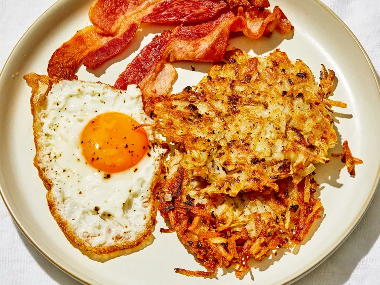

If you're a firm believer that potatoes make basically any meal taste better, then you've come to the right place. Because we are too — especially when it comes to breakfast potatoes.
Choosing which type of breakfast potato to make can be a tough decision, but if you're craving crispy potatoes that remind you of your favorite restaurant, then you should try this hash brown recipe. The shredded potatoes are formed into pancake-like hash browns and lightly pan-fried for the perfect crispy texture that will pair deliciously with any breakfast dish.